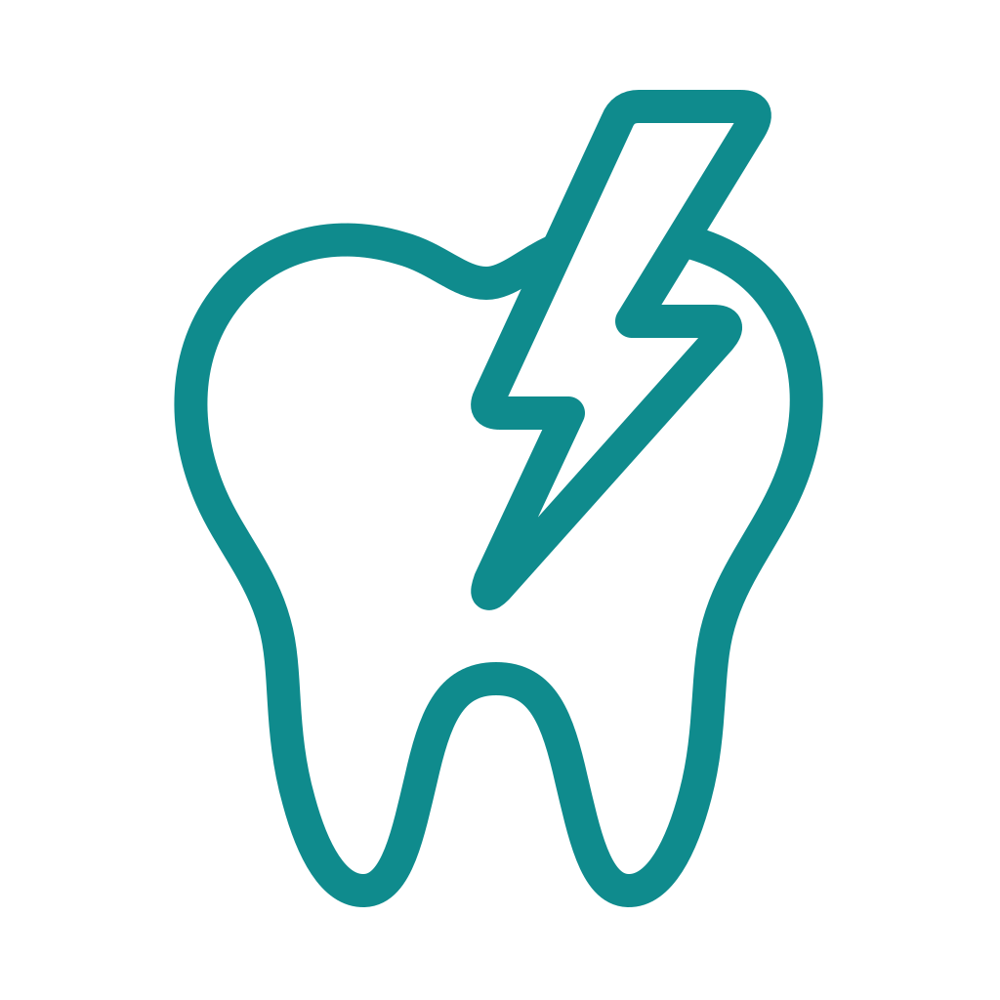
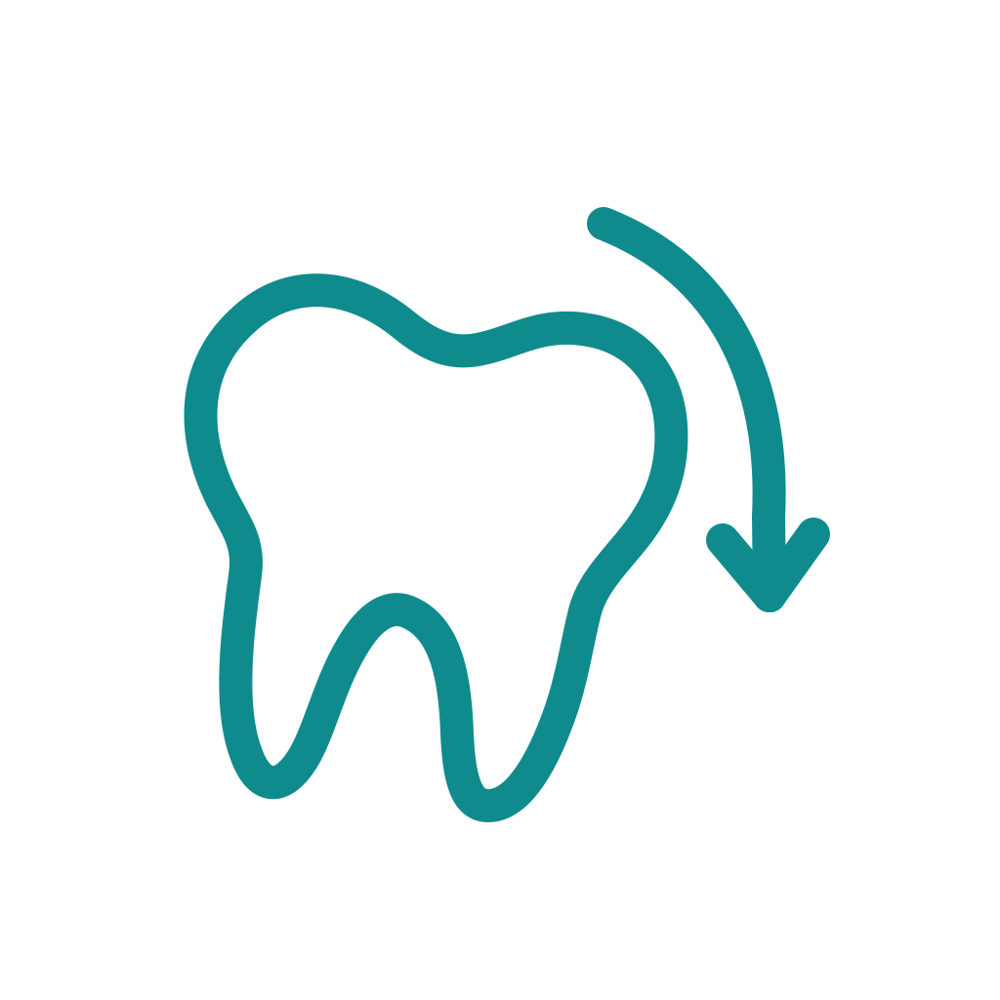
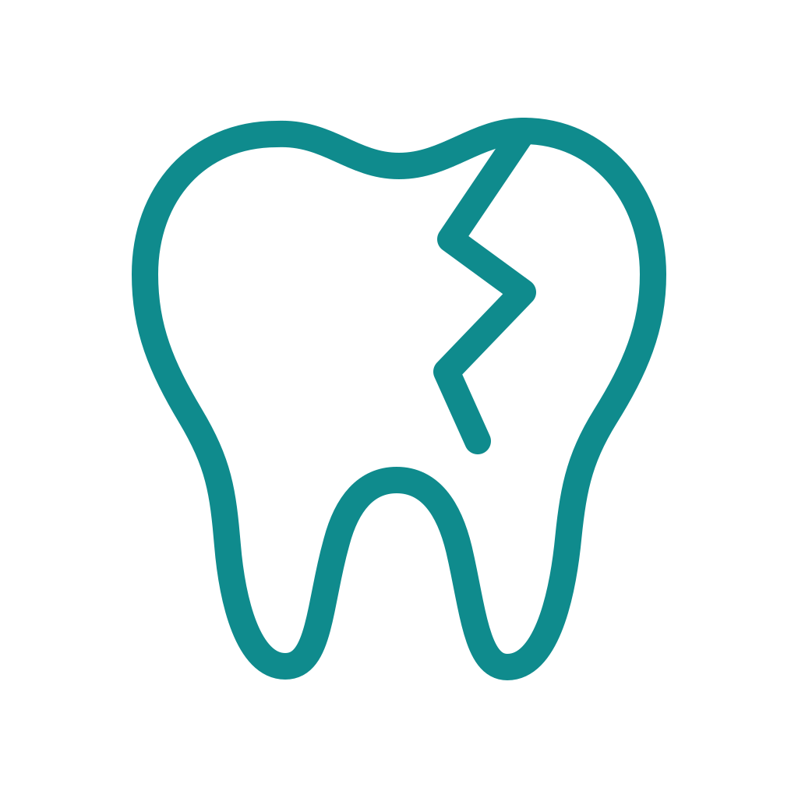
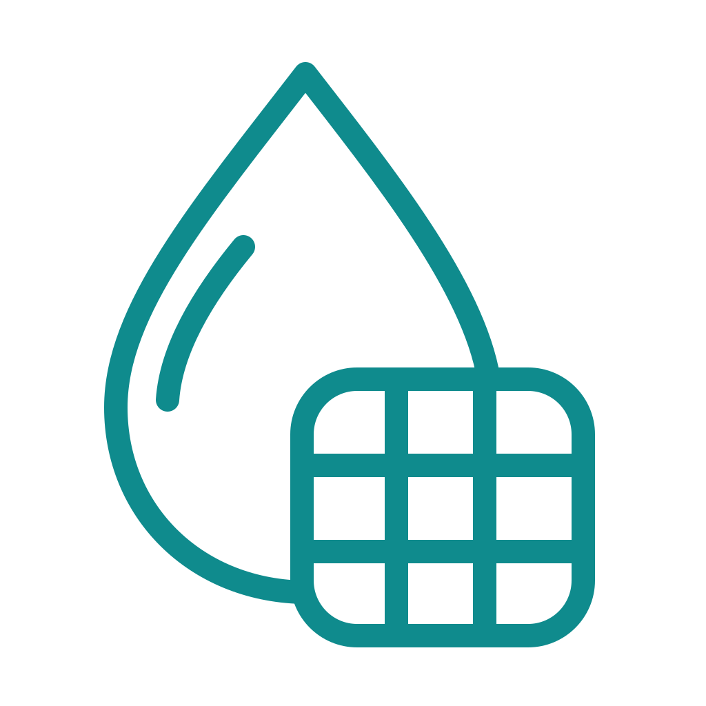

Hitni slučajeviDental emergencies
Zubobolja, otok ili povreda zuba? Pozovite odmah. Radimo svaki dan do 23:30, uključujući vikende.Toothache, swelling or a tooth injury? Call right away. We're open every day until 11:30 PM, including weekends.
Kada odmah da pozoveteWhen to call right away
Šta da uradite do dolaskaWhat to do until you arrive
Opšti saveti prve pomoći. Oni ne zamenjuju pregled, zato nas svakako pozovite.General first-aid tips. They don't replace an examination, so please still call us.

Jak bolSevere pain
- Isperite usta mlakom vodom.Rinse your mouth with lukewarm water.
- Hladan oblog stavite spolja na obraz, ne direktno na zub.Hold a cold compress on the outside of your cheek, not directly on the tooth.
- Ne stavljajte tablete protiv bola na samu desni i ne grejte obraz.Don't place painkillers directly on the gum and don't warm the cheek.

Ispao zubKnocked-out tooth
- Zub držite za krunu (belu površinu), ne za koren.Hold the tooth by the crown (the white part), not the root.
- Ako je prljav, kratko ga isperite vodom, bez trljanja.If dirty, rinse briefly with water without scrubbing.
- Čuvajte ga u mleku ili u ustima uz obraz, i dođite što pre, idealno u roku od sat vremena.Keep it in milk or in your mouth beside your cheek, and come as soon as possible, ideally within an hour.

Slomljen zubBroken tooth
- Sačuvajte odlomljene delove ako možete.Keep any broken pieces if you can.
- Isperite usta i izbegavajte žvakanje na toj strani.Rinse your mouth and avoid chewing on that side.

Krvarenje posle vađenjaBleeding after extraction
- Čvrsto pritisnite čistu gazu na mesto vađenja oko 20 minuta.Press clean gauze firmly on the site for about 20 minutes.
- Ako krvarenje ne prestaje, pozovite nas.If it doesn't stop, call us.
Zubobolja tokom putovanja?Toothache while travelling?
Pacijenti iz inostranstva nam se redovno obraćaju kad im zub zaboli usred puta, često uveče ili vikendom. Komunikacija na engleskom nije problem, a na pregledu čujete dijagnozu i cenu pre zahvata.Visitors regularly come to us when a tooth hurts mid-trip, often in the evening or at the weekend. Communicating in English is no problem, and at the exam you hear the diagnosis and the price before treatment.

Rableova 26, Mirijevo
Beograd · svaki dan 08:00–23:30Belgrade · every day 8:00 AM – 11:30 PM